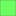
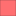

<!doctype html>
<html lang="en">
    <head>
        <meta charset="utf-8">
        <meta http-equiv="X-UA-Compatible" content="IE=edge">
        <meta name="viewport" content="initial-scale=1,user-scalable=no,maximum-scale=1,width=device-width">
        <meta name="mobile-web-app-capable" content="yes">
        <meta name="apple-mobile-web-app-capable" content="yes">
        <link rel="stylesheet" href="css/leaflet.css"><link rel="stylesheet" href="css/L.Control.Locate.min.css">
        <link rel="stylesheet" href="css/qgis2web.css"><link rel="stylesheet" href="css/fontawesome-all.min.css">
        <link rel="stylesheet" href="css/leaflet-control-geocoder.Geocoder.css">
        <style>
        html, body, #map {
            width: 100%;
            height: 100%;
            padding: 0;
            margin: 0;
        }
        </style>
        <title></title>
    </head>
    <body>
        <div id="map">
        </div>
        <script src="js/qgis2web_expressions.js"></script>
        <script src="js/leaflet.js"></script><script src="js/L.Control.Locate.min.js"></script>
        <script src="js/leaflet.rotatedMarker.js"></script>
        <script src="js/leaflet.pattern.js"></script>
        <script src="js/leaflet-hash.js"></script>
        <script src="js/Autolinker.min.js"></script>
        <script src="js/rbush.min.js"></script>
        <script src="js/labelgun.min.js"></script>
        <script src="js/labels.js"></script>
        <script src="js/leaflet-control-geocoder.Geocoder.js"></script>
        <script src="data/BatasDesaJatirejo_1.js"></script>
        <script src="data/KemampuanLahanPerdagangandanJasa_2.js"></script>
        <script src="data/KesesuaianLahanPerdagangandanJasa_3.js"></script>
        <script>
        var map = L.map('map', {
            zoomControl:true, maxZoom:28, minZoom:1
        }).fitBounds([[-7.783144326088878,111.93223118460286],[-7.7553570155538365,111.9757939274572]]);
        var hash = new L.Hash(map);
        map.attributionControl.setPrefix('<a href="https://github.com/tomchadwin/qgis2web" target="_blank">qgis2web</a> &middot; <a href="https://leafletjs.com" title="A JS library for interactive maps">Leaflet</a> &middot; <a href="https://qgis.org">QGIS</a>');
        var autolinker = new Autolinker({truncate: {length: 30, location: 'smart'}});
        L.control.locate({locateOptions: {maxZoom: 19}}).addTo(map);
        var bounds_group = new L.featureGroup([]);
        function setBounds() {
        }
        map.createPane('pane_GoogleMaps_0');
        map.getPane('pane_GoogleMaps_0').style.zIndex = 400;
        var layer_GoogleMaps_0 = L.tileLayer('https://mt1.google.com/vt/lyrs=m&x={x}&y={y}&z={z}', {
            pane: 'pane_GoogleMaps_0',
            opacity: 1.0,
            attribution: '',
            minZoom: 1,
            maxZoom: 28,
            minNativeZoom: 0,
            maxNativeZoom: 19
        });
        layer_GoogleMaps_0;
        map.addLayer(layer_GoogleMaps_0);
        function pop_BatasDesaJatirejo_1(feature, layer) {
            var popupContent = '<table>\
                    <tr>\
                        <td colspan="2">' + (feature.properties['KDPPUM'] !== null ? autolinker.link(feature.properties['KDPPUM'].toLocaleString()) : '') + '</td>\
                    </tr>\
                    <tr>\
                        <td colspan="2">' + (feature.properties['NAMOBJ'] !== null ? autolinker.link(feature.properties['NAMOBJ'].toLocaleString()) : '') + '</td>\
                    </tr>\
                    <tr>\
                        <td colspan="2">' + (feature.properties['Luas_M'] !== null ? autolinker.link(feature.properties['Luas_M'].toLocaleString()) : '') + '</td>\
                    </tr>\
                    <tr>\
                        <td colspan="2">' + (feature.properties['Luas_Ha'] !== null ? autolinker.link(feature.properties['Luas_Ha'].toLocaleString()) : '') + '</td>\
                    </tr>\
                </table>';
            layer.bindPopup(popupContent, {maxHeight: 400});
        }

        function style_BatasDesaJatirejo_1_0() {
            return {
                pane: 'pane_BatasDesaJatirejo_1',
                opacity: 1,
                color: 'rgba(53,121,177,1.0)',
                dashArray: '',
                lineCap: 'square',
                lineJoin: 'bevel',
                weight: 4.0,
                fillOpacity: 0,
                interactive: false,
            }
        }
        map.createPane('pane_BatasDesaJatirejo_1');
        map.getPane('pane_BatasDesaJatirejo_1').style.zIndex = 401;
        map.getPane('pane_BatasDesaJatirejo_1').style['mix-blend-mode'] = 'normal';
        var layer_BatasDesaJatirejo_1 = new L.geoJson(json_BatasDesaJatirejo_1, {
            attribution: '',
            interactive: false,
            dataVar: 'json_BatasDesaJatirejo_1',
            layerName: 'layer_BatasDesaJatirejo_1',
            pane: 'pane_BatasDesaJatirejo_1',
            onEachFeature: pop_BatasDesaJatirejo_1,
            style: style_BatasDesaJatirejo_1_0,
        });
        bounds_group.addLayer(layer_BatasDesaJatirejo_1);
        map.addLayer(layer_BatasDesaJatirejo_1);
        function pop_KemampuanLahanPerdagangandanJasa_2(feature, layer) {
            var popupContent = '<table>\
                    <tr>\
                        <td colspan="2">' + (feature.properties['fid'] !== null ? autolinker.link(feature.properties['fid'].toLocaleString()) : '') + '</td>\
                    </tr>\
                    <tr>\
                        <td colspan="2">' + (feature.properties['DN'] !== null ? autolinker.link(feature.properties['DN'].toLocaleString()) : '') + '</td>\
                    </tr>\
                    <tr>\
                        <th scope="row">Kelas</th>\
                        <td>' + (feature.properties['Kelas'] !== null ? autolinker.link(feature.properties['Kelas'].toLocaleString()) : '') + '</td>\
                    </tr>\
                </table>';
            layer.bindPopup(popupContent, {maxHeight: 400});
        }

        function style_KemampuanLahanPerdagangandanJasa_2_0(feature) {
            switch(String(feature.properties['DN'])) {
                default:
                    return {
                pane: 'pane_KemampuanLahanPerdagangandanJasa_2',
                opacity: 1,
                color: 'rgba(35,35,35,1.0)',
                dashArray: '',
                lineCap: 'butt',
                lineJoin: 'miter',
                weight: 1, 
                fill: true,
                fillOpacity: 1,
                fillColor: 'rgba(255,111,113,1.0)',
                interactive: true,
            }
                    break;
                case '2':
                    return {
                pane: 'pane_KemampuanLahanPerdagangandanJasa_2',
                opacity: 1,
                color: 'rgba(35,35,35,1.0)',
                dashArray: '',
                lineCap: 'butt',
                lineJoin: 'miter',
                weight: 1, 
                fill: true,
                fillOpacity: 1,
                fillColor: 'rgba(240,255,71,1.0)',
                interactive: true,
            }
                    break;
                case '3':
                    return {
                pane: 'pane_KemampuanLahanPerdagangandanJasa_2',
                opacity: 1,
                color: 'rgba(35,35,35,1.0)',
                dashArray: '',
                lineCap: 'butt',
                lineJoin: 'miter',
                weight: 1, 
                fill: true,
                fillOpacity: 1,
                fillColor: 'rgba(112,255,99,1.0)',
                interactive: true,
            }
                    break;
            }
        }
        map.createPane('pane_KemampuanLahanPerdagangandanJasa_2');
        map.getPane('pane_KemampuanLahanPerdagangandanJasa_2').style.zIndex = 402;
        map.getPane('pane_KemampuanLahanPerdagangandanJasa_2').style['mix-blend-mode'] = 'normal';
        var layer_KemampuanLahanPerdagangandanJasa_2 = new L.geoJson(json_KemampuanLahanPerdagangandanJasa_2, {
            attribution: '',
            interactive: true,
            dataVar: 'json_KemampuanLahanPerdagangandanJasa_2',
            layerName: 'layer_KemampuanLahanPerdagangandanJasa_2',
            pane: 'pane_KemampuanLahanPerdagangandanJasa_2',
            onEachFeature: pop_KemampuanLahanPerdagangandanJasa_2,
            style: style_KemampuanLahanPerdagangandanJasa_2_0,
        });
        bounds_group.addLayer(layer_KemampuanLahanPerdagangandanJasa_2);
        map.addLayer(layer_KemampuanLahanPerdagangandanJasa_2);
        function pop_KesesuaianLahanPerdagangandanJasa_3(feature, layer) {
            var popupContent = '<table>\
                    <tr>\
                        <td colspan="2">' + (feature.properties['fid'] !== null ? autolinker.link(feature.properties['fid'].toLocaleString()) : '') + '</td>\
                    </tr>\
                    <tr>\
                        <td colspan="2">' + (feature.properties['cat'] !== null ? autolinker.link(feature.properties['cat'].toLocaleString()) : '') + '</td>\
                    </tr>\
                    <tr>\
                        <td colspan="2">' + (feature.properties['SRS_ID'] !== null ? autolinker.link(feature.properties['SRS_ID'].toLocaleString()) : '') + '</td>\
                    </tr>\
                    <tr>\
                        <td colspan="2">' + (feature.properties['Penutup'] !== null ? autolinker.link(feature.properties['Penutup'].toLocaleString()) : '') + '</td>\
                    </tr>\
                    <tr>\
                        <th scope="row">Kesesuaian</th>\
                        <td>' + (feature.properties['Kesesuaian'] !== null ? autolinker.link(feature.properties['Kesesuaian'].toLocaleString()) : '') + '</td>\
                    </tr>\
                </table>';
            layer.bindPopup(popupContent, {maxHeight: 400});
        }

        function style_KesesuaianLahanPerdagangandanJasa_3_0(feature) {
            switch(String(feature.properties['Kesesuaian'])) {
                case 'Sesuai':
                    return {
                pane: 'pane_KesesuaianLahanPerdagangandanJasa_3',
                opacity: 1,
                color: 'rgba(35,35,35,1.0)',
                dashArray: '',
                lineCap: 'butt',
                lineJoin: 'miter',
                weight: 1, 
                fill: true,
                fillOpacity: 1,
                fillColor: 'rgba(112,255,99,1.0)',
                interactive: true,
            }
                    break;
                case 'Cukup Sesuai':
                    return {
                pane: 'pane_KesesuaianLahanPerdagangandanJasa_3',
                opacity: 1,
                color: 'rgba(35,35,35,1.0)',
                dashArray: '',
                lineCap: 'butt',
                lineJoin: 'miter',
                weight: 1, 
                fill: true,
                fillOpacity: 1,
                fillColor: 'rgba(240,255,71,1.0)',
                interactive: true,
            }
                    break;
                case 'Tidak Sesuai':
                    return {
                pane: 'pane_KesesuaianLahanPerdagangandanJasa_3',
                opacity: 1,
                color: 'rgba(35,35,35,1.0)',
                dashArray: '',
                lineCap: 'butt',
                lineJoin: 'miter',
                weight: 1, 
                fill: true,
                fillOpacity: 1,
                fillColor: 'rgba(255,111,113,1.0)',
                interactive: true,
            }
                    break;
            }
        }
        map.createPane('pane_KesesuaianLahanPerdagangandanJasa_3');
        map.getPane('pane_KesesuaianLahanPerdagangandanJasa_3').style.zIndex = 403;
        map.getPane('pane_KesesuaianLahanPerdagangandanJasa_3').style['mix-blend-mode'] = 'normal';
        var layer_KesesuaianLahanPerdagangandanJasa_3 = new L.geoJson(json_KesesuaianLahanPerdagangandanJasa_3, {
            attribution: '',
            interactive: true,
            dataVar: 'json_KesesuaianLahanPerdagangandanJasa_3',
            layerName: 'layer_KesesuaianLahanPerdagangandanJasa_3',
            pane: 'pane_KesesuaianLahanPerdagangandanJasa_3',
            onEachFeature: pop_KesesuaianLahanPerdagangandanJasa_3,
            style: style_KesesuaianLahanPerdagangandanJasa_3_0,
        });
        bounds_group.addLayer(layer_KesesuaianLahanPerdagangandanJasa_3);
        map.addLayer(layer_KesesuaianLahanPerdagangandanJasa_3);
        var osmGeocoder = new L.Control.Geocoder({
            collapsed: true,
            position: 'topleft',
            text: 'Search',
            title: 'Testing'
        }).addTo(map);
        document.getElementsByClassName('leaflet-control-geocoder-icon')[0]
        .className += ' fa fa-search';
        document.getElementsByClassName('leaflet-control-geocoder-icon')[0]
        .title += 'Search for a place';
        var baseMaps = {};
        L.control.layers(baseMaps,{'Kesesuaian Lahan Perdagangan dan Jasa<br /><table><tr><td style="text-align: center;"></td><td>Sesuai</td></tr><tr><td style="text-align: center;"></td><td>Cukup Sesuai</td></tr><tr><td style="text-align: center;"></td><td>Tidak Sesuai</td></tr></table>': layer_KesesuaianLahanPerdagangandanJasa_3,'Kemampuan Lahan Perdagangan dan Jasa<br /><table><tr><td style="text-align: center;"></td><td>Tidak Sesuai</td></tr><tr><td style="text-align: center;"></td><td>Cukup Sesuai</td></tr><tr><td style="text-align: center;"></td><td>Sesuai</td></tr></table>': layer_KemampuanLahanPerdagangandanJasa_2,' Batas Desa Jatirejo': layer_BatasDesaJatirejo_1,"Google Maps": layer_GoogleMaps_0,},{collapsed:false}).addTo(map);
        setBounds();
        resetLabels([layer_BatasDesaJatirejo_1]);
        map.on("zoomend", function(){
            resetLabels([layer_BatasDesaJatirejo_1]);
        });
        map.on("layeradd", function(){
            resetLabels([layer_BatasDesaJatirejo_1]);
        });
        map.on("layerremove", function(){
            resetLabels([layer_BatasDesaJatirejo_1]);
        });
        </script>
    </body>
</html>
